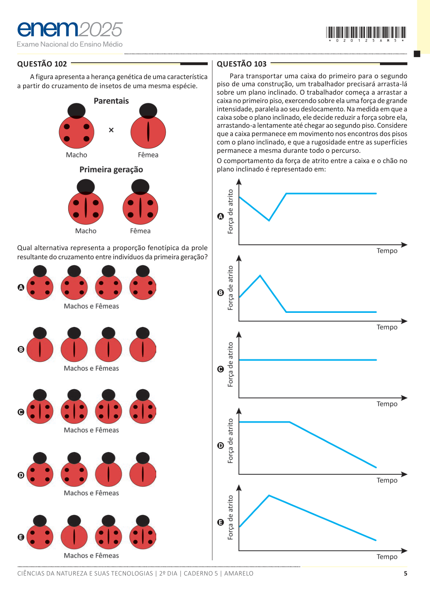

Questão 103 Abrir individualmente
Reprodução integral da página oficial 5
Questão 102 à esquerda, questão 103 à direita. Figura de herança e gráficos originais preservados do PDF do INEP.

Página 5 · Questões 102 e 103, com imagens e cinco alternativas gráficas originais por questão. Validação privada.
Questão 102 à esquerda, questão 103 à direita. Figura de herança e gráficos originais preservados do PDF do INEP.
